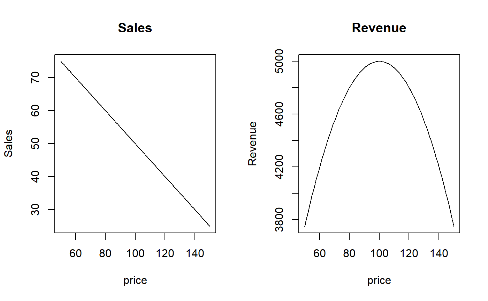

ch19.RdTo print a listing of all examples of a chapter, use ch19().
To run all the examples of ch19(), use example(ch19).
ch19()
toc
Other Chapters: ch01, ch02,
ch03, ch04,
ch05, ch06,
ch07, ch08,
ch09, ch10,
ch11, ch12,
ch13, ch14,
ch15, ch16,
ch17, ch18,
ch20
# Chapter 19 - Ten Things You Can Do in R That You Would've Done in Microsoft Excel # Adding Row and Column Totals iris.num <- iris[, -5] colSums(iris.num)#> Sepal.Length Sepal.Width Petal.Length Petal.Width #> 876.5 458.6 563.7 179.9colMeans(iris.num)#> Sepal.Length Sepal.Width Petal.Length Petal.Width #> 5.843333 3.057333 3.758000 1.199333#> Sepal.Length Sepal.Width Petal.Length Petal.Width #> 4.3 2.0 1.0 0.1#> Sepal.Length Sepal.Width Petal.Length Petal.Width #> 7.9 4.4 6.9 2.5#> Sepal.Length Sepal.Width Petal.Length Petal.Width #> 4.3 2.0 1.0 0.1#> Sepal.Length Sepal.Width Petal.Length Petal.Width #> 7.9 4.4 6.9 2.5# Formatting Numbers format(12345.6789, digits=9, decimal.mark=",", big.mark=" ",small.mark=".", , small.interval=3)#> [1] "12 345,678.9"#> mpg cyl disp hp #> " 20.09" " 6.19" "230.72" "146.69"#> [1] "50.0 %" "51.0 %" "52.0 %" "53.0 %" "54.0 %" "55.0 %"#> [1] "$ 265.51" "$ 372.12" "$ 572.85" "$ 908.21" "$ 201.68"#> [1] "bread costed $ 2.10 " "cookies costed $ 4.00 "#> mpg cyl disp hp drat wt qsec vs am gear carb #> Honda Civic 30.4 4 75.7 52 4.93 1.615 18.52 1 1 4 2 #> Merc 240D 24.4 4 146.7 62 3.69 3.190 20.00 1 0 4 2 #> Toyota Corolla 33.9 4 71.1 65 4.22 1.835 19.90 1 1 4 1 #> Fiat 128 32.4 4 78.7 66 4.08 2.200 19.47 1 1 4 1 #> Fiat X1-9 27.3 4 79.0 66 4.08 1.935 18.90 1 1 4 1 #> Porsche 914-2 26.0 4 120.3 91 4.43 2.140 16.70 0 1 5 2 #> Datsun 710 22.8 4 108.0 93 3.85 2.320 18.61 1 1 4 1 #> Merc 230 22.8 4 140.8 95 3.92 3.150 22.90 1 0 4 2 #> Toyota Corona 21.5 4 120.1 97 3.70 2.465 20.01 1 0 3 1 #> Valiant 18.1 6 225.0 105 2.76 3.460 20.22 1 0 3 1 #> Volvo 142E 21.4 4 121.0 109 4.11 2.780 18.60 1 1 4 2 #> Mazda RX4 21.0 6 160.0 110 3.90 2.620 16.46 0 1 4 4 #> Mazda RX4 Wag 21.0 6 160.0 110 3.90 2.875 17.02 0 1 4 4 #> Hornet 4 Drive 21.4 6 258.0 110 3.08 3.215 19.44 1 0 3 1 #> Lotus Europa 30.4 4 95.1 113 3.77 1.513 16.90 1 1 5 2 #> Merc 280 19.2 6 167.6 123 3.92 3.440 18.30 1 0 4 4 #> Merc 280C 17.8 6 167.6 123 3.92 3.440 18.90 1 0 4 4 #> Dodge Challenger 15.5 8 318.0 150 2.76 3.520 16.87 0 0 3 2 #> AMC Javelin 15.2 8 304.0 150 3.15 3.435 17.30 0 0 3 2 #> Hornet Sportabout 18.7 8 360.0 175 3.15 3.440 17.02 0 0 3 2 #> Pontiac Firebird 19.2 8 400.0 175 3.08 3.845 17.05 0 0 3 2 #> Ferrari Dino 19.7 6 145.0 175 3.62 2.770 15.50 0 1 5 6 #> Merc 450SE 16.4 8 275.8 180 3.07 4.070 17.40 0 0 3 3 #> Merc 450SL 17.3 8 275.8 180 3.07 3.730 17.60 0 0 3 3 #> Merc 450SLC 15.2 8 275.8 180 3.07 3.780 18.00 0 0 3 3 #> Cadillac Fleetwood 10.4 8 472.0 205 2.93 5.250 17.98 0 0 3 4 #> Lincoln Continental 10.4 8 460.0 215 3.00 5.424 17.82 0 0 3 4 #> Chrysler Imperial 14.7 8 440.0 230 3.23 5.345 17.42 0 0 3 4 #> Duster 360 14.3 8 360.0 245 3.21 3.570 15.84 0 0 3 4 #> Camaro Z28 13.3 8 350.0 245 3.73 3.840 15.41 0 0 3 4 #> Ford Pantera L 15.8 8 351.0 264 4.22 3.170 14.50 0 1 5 4 #> Maserati Bora 15.0 8 301.0 335 3.54 3.570 14.60 0 1 5 8#> mpg cyl disp hp drat wt qsec vs am gear carb #> Maserati Bora 15.0 8 301.0 335 3.54 3.570 14.60 0 1 5 8 #> Ford Pantera L 15.8 8 351.0 264 4.22 3.170 14.50 0 1 5 4 #> Duster 360 14.3 8 360.0 245 3.21 3.570 15.84 0 0 3 4 #> Camaro Z28 13.3 8 350.0 245 3.73 3.840 15.41 0 0 3 4 #> Chrysler Imperial 14.7 8 440.0 230 3.23 5.345 17.42 0 0 3 4 #> Lincoln Continental 10.4 8 460.0 215 3.00 5.424 17.82 0 0 3 4 #> Cadillac Fleetwood 10.4 8 472.0 205 2.93 5.250 17.98 0 0 3 4 #> Merc 450SE 16.4 8 275.8 180 3.07 4.070 17.40 0 0 3 3 #> Merc 450SL 17.3 8 275.8 180 3.07 3.730 17.60 0 0 3 3 #> Merc 450SLC 15.2 8 275.8 180 3.07 3.780 18.00 0 0 3 3 #> Hornet Sportabout 18.7 8 360.0 175 3.15 3.440 17.02 0 0 3 2 #> Pontiac Firebird 19.2 8 400.0 175 3.08 3.845 17.05 0 0 3 2 #> Ferrari Dino 19.7 6 145.0 175 3.62 2.770 15.50 0 1 5 6 #> Dodge Challenger 15.5 8 318.0 150 2.76 3.520 16.87 0 0 3 2 #> AMC Javelin 15.2 8 304.0 150 3.15 3.435 17.30 0 0 3 2 #> Merc 280 19.2 6 167.6 123 3.92 3.440 18.30 1 0 4 4 #> Merc 280C 17.8 6 167.6 123 3.92 3.440 18.90 1 0 4 4 #> Lotus Europa 30.4 4 95.1 113 3.77 1.513 16.90 1 1 5 2 #> Mazda RX4 21.0 6 160.0 110 3.90 2.620 16.46 0 1 4 4 #> Mazda RX4 Wag 21.0 6 160.0 110 3.90 2.875 17.02 0 1 4 4 #> Hornet 4 Drive 21.4 6 258.0 110 3.08 3.215 19.44 1 0 3 1 #> Volvo 142E 21.4 4 121.0 109 4.11 2.780 18.60 1 1 4 2 #> Valiant 18.1 6 225.0 105 2.76 3.460 20.22 1 0 3 1 #> Toyota Corona 21.5 4 120.1 97 3.70 2.465 20.01 1 0 3 1 #> Merc 230 22.8 4 140.8 95 3.92 3.150 22.90 1 0 4 2 #> Datsun 710 22.8 4 108.0 93 3.85 2.320 18.61 1 1 4 1 #> Porsche 914-2 26.0 4 120.3 91 4.43 2.140 16.70 0 1 5 2 #> Fiat 128 32.4 4 78.7 66 4.08 2.200 19.47 1 1 4 1 #> Fiat X1-9 27.3 4 79.0 66 4.08 1.935 18.90 1 1 4 1 #> Toyota Corolla 33.9 4 71.1 65 4.22 1.835 19.90 1 1 4 1 #> Merc 240D 24.4 4 146.7 62 3.69 3.190 20.00 1 0 4 2 #> Honda Civic 30.4 4 75.7 52 4.93 1.615 18.52 1 1 4 2# Making Choices with If mtcars <- within(mtcars, mpgClass <- ifelse(mpg < mean(mpg), "Low", "High")) mtcars[mtcars$mpgClass == "High", ]#> mpg cyl disp hp drat wt qsec vs am gear carb mpgClass #> Mazda RX4 21.0 6 160.0 110 3.90 2.620 16.46 0 1 4 4 High #> Mazda RX4 Wag 21.0 6 160.0 110 3.90 2.875 17.02 0 1 4 4 High #> Datsun 710 22.8 4 108.0 93 3.85 2.320 18.61 1 1 4 1 High #> Hornet 4 Drive 21.4 6 258.0 110 3.08 3.215 19.44 1 0 3 1 High #> Merc 240D 24.4 4 146.7 62 3.69 3.190 20.00 1 0 4 2 High #> Merc 230 22.8 4 140.8 95 3.92 3.150 22.90 1 0 4 2 High #> Fiat 128 32.4 4 78.7 66 4.08 2.200 19.47 1 1 4 1 High #> Honda Civic 30.4 4 75.7 52 4.93 1.615 18.52 1 1 4 2 High #> Toyota Corolla 33.9 4 71.1 65 4.22 1.835 19.90 1 1 4 1 High #> Toyota Corona 21.5 4 120.1 97 3.70 2.465 20.01 1 0 3 1 High #> Fiat X1-9 27.3 4 79.0 66 4.08 1.935 18.90 1 1 4 1 High #> Porsche 914-2 26.0 4 120.3 91 4.43 2.140 16.70 0 1 5 2 High #> Lotus Europa 30.4 4 95.1 113 3.77 1.513 16.90 1 1 5 2 High #> Volvo 142E 21.4 4 121.0 109 4.11 2.780 18.60 1 1 4 2 High#> [1] 20.09062#> [1] 24.22353#> [1] 15.40667#> [1] 13#> [,1] [,2] [,3] #> [1,] 1 5 9 #> [2,] 2 6 10 #> [3,] 3 7 11 #> [4,] 4 8 12t(x)#> [,1] [,2] [,3] [,4] #> [1,] 1 2 3 4 #> [2,] 5 6 7 8 #> [3,] 9 10 11 12#> Mazda RX4 Mazda RX4 Wag Datsun 710 Hornet 4 Drive #> mpg "21.0" "21.0" "22.8" "21.4" #> cyl "6" "6" "4" "6" #> disp "160" "160" "108" "258" #> hp "110" "110" " 93" "110" #> drat "3.90" "3.90" "3.85" "3.08" #> wt "2.620" "2.875" "2.320" "3.215" #> qsec "16.46" "17.02" "18.61" "19.44" #> vs "0" "0" "1" "1" #> am "1" "1" "1" "0" #> gear "4" "4" "4" "3" #> carb "4" "4" "1" "1" #> mpgClass "High" "High" "High" "High"#> [1] 6 4 8#> [1] FALSE FALSE FALSE FALSE FALSE FALSEwhich(dupes)#> [1] 143iris[dupes, ]#> Sepal.Length Sepal.Width Petal.Length Petal.Width Species #> 143 5.8 2.7 5.1 1.9 virginicairis[!dupes, ]#> Sepal.Length Sepal.Width Petal.Length Petal.Width Species #> 1 5.1 3.5 1.4 0.2 setosa #> 2 4.9 3.0 1.4 0.2 setosa #> 3 4.7 3.2 1.3 0.2 setosa #> 4 4.6 3.1 1.5 0.2 setosa #> 5 5.0 3.6 1.4 0.2 setosa #> 6 5.4 3.9 1.7 0.4 setosa #> 7 4.6 3.4 1.4 0.3 setosa #> 8 5.0 3.4 1.5 0.2 setosa #> 9 4.4 2.9 1.4 0.2 setosa #> 10 4.9 3.1 1.5 0.1 setosa #> 11 5.4 3.7 1.5 0.2 setosa #> 12 4.8 3.4 1.6 0.2 setosa #> 13 4.8 3.0 1.4 0.1 setosa #> 14 4.3 3.0 1.1 0.1 setosa #> 15 5.8 4.0 1.2 0.2 setosa #> 16 5.7 4.4 1.5 0.4 setosa #> 17 5.4 3.9 1.3 0.4 setosa #> 18 5.1 3.5 1.4 0.3 setosa #> 19 5.7 3.8 1.7 0.3 setosa #> 20 5.1 3.8 1.5 0.3 setosa #> 21 5.4 3.4 1.7 0.2 setosa #> 22 5.1 3.7 1.5 0.4 setosa #> 23 4.6 3.6 1.0 0.2 setosa #> 24 5.1 3.3 1.7 0.5 setosa #> 25 4.8 3.4 1.9 0.2 setosa #> 26 5.0 3.0 1.6 0.2 setosa #> 27 5.0 3.4 1.6 0.4 setosa #> 28 5.2 3.5 1.5 0.2 setosa #> 29 5.2 3.4 1.4 0.2 setosa #> 30 4.7 3.2 1.6 0.2 setosa #> 31 4.8 3.1 1.6 0.2 setosa #> 32 5.4 3.4 1.5 0.4 setosa #> 33 5.2 4.1 1.5 0.1 setosa #> 34 5.5 4.2 1.4 0.2 setosa #> 35 4.9 3.1 1.5 0.2 setosa #> 36 5.0 3.2 1.2 0.2 setosa #> 37 5.5 3.5 1.3 0.2 setosa #> 38 4.9 3.6 1.4 0.1 setosa #> 39 4.4 3.0 1.3 0.2 setosa #> 40 5.1 3.4 1.5 0.2 setosa #> 41 5.0 3.5 1.3 0.3 setosa #> 42 4.5 2.3 1.3 0.3 setosa #> 43 4.4 3.2 1.3 0.2 setosa #> 44 5.0 3.5 1.6 0.6 setosa #> 45 5.1 3.8 1.9 0.4 setosa #> 46 4.8 3.0 1.4 0.3 setosa #> 47 5.1 3.8 1.6 0.2 setosa #> 48 4.6 3.2 1.4 0.2 setosa #> 49 5.3 3.7 1.5 0.2 setosa #> 50 5.0 3.3 1.4 0.2 setosa #> 51 7.0 3.2 4.7 1.4 versicolor #> 52 6.4 3.2 4.5 1.5 versicolor #> 53 6.9 3.1 4.9 1.5 versicolor #> 54 5.5 2.3 4.0 1.3 versicolor #> 55 6.5 2.8 4.6 1.5 versicolor #> 56 5.7 2.8 4.5 1.3 versicolor #> 57 6.3 3.3 4.7 1.6 versicolor #> 58 4.9 2.4 3.3 1.0 versicolor #> 59 6.6 2.9 4.6 1.3 versicolor #> 60 5.2 2.7 3.9 1.4 versicolor #> 61 5.0 2.0 3.5 1.0 versicolor #> 62 5.9 3.0 4.2 1.5 versicolor #> 63 6.0 2.2 4.0 1.0 versicolor #> 64 6.1 2.9 4.7 1.4 versicolor #> 65 5.6 2.9 3.6 1.3 versicolor #> 66 6.7 3.1 4.4 1.4 versicolor #> 67 5.6 3.0 4.5 1.5 versicolor #> 68 5.8 2.7 4.1 1.0 versicolor #> 69 6.2 2.2 4.5 1.5 versicolor #> 70 5.6 2.5 3.9 1.1 versicolor #> 71 5.9 3.2 4.8 1.8 versicolor #> 72 6.1 2.8 4.0 1.3 versicolor #> 73 6.3 2.5 4.9 1.5 versicolor #> 74 6.1 2.8 4.7 1.2 versicolor #> 75 6.4 2.9 4.3 1.3 versicolor #> 76 6.6 3.0 4.4 1.4 versicolor #> 77 6.8 2.8 4.8 1.4 versicolor #> 78 6.7 3.0 5.0 1.7 versicolor #> 79 6.0 2.9 4.5 1.5 versicolor #> 80 5.7 2.6 3.5 1.0 versicolor #> 81 5.5 2.4 3.8 1.1 versicolor #> 82 5.5 2.4 3.7 1.0 versicolor #> 83 5.8 2.7 3.9 1.2 versicolor #> 84 6.0 2.7 5.1 1.6 versicolor #> 85 5.4 3.0 4.5 1.5 versicolor #> 86 6.0 3.4 4.5 1.6 versicolor #> 87 6.7 3.1 4.7 1.5 versicolor #> 88 6.3 2.3 4.4 1.3 versicolor #> 89 5.6 3.0 4.1 1.3 versicolor #> 90 5.5 2.5 4.0 1.3 versicolor #> 91 5.5 2.6 4.4 1.2 versicolor #> 92 6.1 3.0 4.6 1.4 versicolor #> 93 5.8 2.6 4.0 1.2 versicolor #> 94 5.0 2.3 3.3 1.0 versicolor #> 95 5.6 2.7 4.2 1.3 versicolor #> 96 5.7 3.0 4.2 1.2 versicolor #> 97 5.7 2.9 4.2 1.3 versicolor #> 98 6.2 2.9 4.3 1.3 versicolor #> 99 5.1 2.5 3.0 1.1 versicolor #> 100 5.7 2.8 4.1 1.3 versicolor #> 101 6.3 3.3 6.0 2.5 virginica #> 102 5.8 2.7 5.1 1.9 virginica #> 103 7.1 3.0 5.9 2.1 virginica #> 104 6.3 2.9 5.6 1.8 virginica #> 105 6.5 3.0 5.8 2.2 virginica #> 106 7.6 3.0 6.6 2.1 virginica #> 107 4.9 2.5 4.5 1.7 virginica #> 108 7.3 2.9 6.3 1.8 virginica #> 109 6.7 2.5 5.8 1.8 virginica #> 110 7.2 3.6 6.1 2.5 virginica #> 111 6.5 3.2 5.1 2.0 virginica #> 112 6.4 2.7 5.3 1.9 virginica #> 113 6.8 3.0 5.5 2.1 virginica #> 114 5.7 2.5 5.0 2.0 virginica #> 115 5.8 2.8 5.1 2.4 virginica #> 116 6.4 3.2 5.3 2.3 virginica #> 117 6.5 3.0 5.5 1.8 virginica #> 118 7.7 3.8 6.7 2.2 virginica #> 119 7.7 2.6 6.9 2.3 virginica #> 120 6.0 2.2 5.0 1.5 virginica #> 121 6.9 3.2 5.7 2.3 virginica #> 122 5.6 2.8 4.9 2.0 virginica #> 123 7.7 2.8 6.7 2.0 virginica #> 124 6.3 2.7 4.9 1.8 virginica #> 125 6.7 3.3 5.7 2.1 virginica #> 126 7.2 3.2 6.0 1.8 virginica #> 127 6.2 2.8 4.8 1.8 virginica #> 128 6.1 3.0 4.9 1.8 virginica #> 129 6.4 2.8 5.6 2.1 virginica #> 130 7.2 3.0 5.8 1.6 virginica #> 131 7.4 2.8 6.1 1.9 virginica #> 132 7.9 3.8 6.4 2.0 virginica #> 133 6.4 2.8 5.6 2.2 virginica #> 134 6.3 2.8 5.1 1.5 virginica #> 135 6.1 2.6 5.6 1.4 virginica #> 136 7.7 3.0 6.1 2.3 virginica #> 137 6.3 3.4 5.6 2.4 virginica #> 138 6.4 3.1 5.5 1.8 virginica #> 139 6.0 3.0 4.8 1.8 virginica #> 140 6.9 3.1 5.4 2.1 virginica #> 141 6.7 3.1 5.6 2.4 virginica #> 142 6.9 3.1 5.1 2.3 virginica #> 144 6.8 3.2 5.9 2.3 virginica #> 145 6.7 3.3 5.7 2.5 virginica #> 146 6.7 3.0 5.2 2.3 virginica #> 147 6.3 2.5 5.0 1.9 virginica #> 148 6.5 3.0 5.2 2.0 virginica #> 149 6.2 3.4 5.4 2.3 virginica #> 150 5.9 3.0 5.1 1.8 virginica#> [1] 149#> [1] 20mtcars[index, 1:4]#> mpg cyl disp hp #> Toyota Corolla 33.9 4 71.1 65#> 3 4 5 #> 4 97.0000 76.0 102.0 #> 6 107.5000 116.5 175.0 #> 8 194.1667 NA 299.5#> cyl gear am hp #> 1 4 3 0 97.00000 #> 2 6 3 0 107.50000 #> 3 8 3 0 194.16667 #> 4 4 4 0 78.50000 #> 5 6 4 0 123.00000 #> 6 4 4 1 75.16667 #> 7 6 4 1 110.00000 #> 8 4 5 1 102.00000 #> 9 6 5 1 175.00000 #> 10 8 5 1 299.50000# Using the Goal Seek and Solver sales <- function(price) { 100 - 0.5 * price } revenue <- function(price) { price * sales(price) } par(mfrow=c(1, 2)) curve(sales, from=50, to=150, xname="price", ylab="Sales", main="Sales") curve(revenue, from=50, to=150, xname="price", ylab="Revenue", main="Revenue")#> $maximum #> [1] 100 #> #> $objective #> [1] 5000 #>